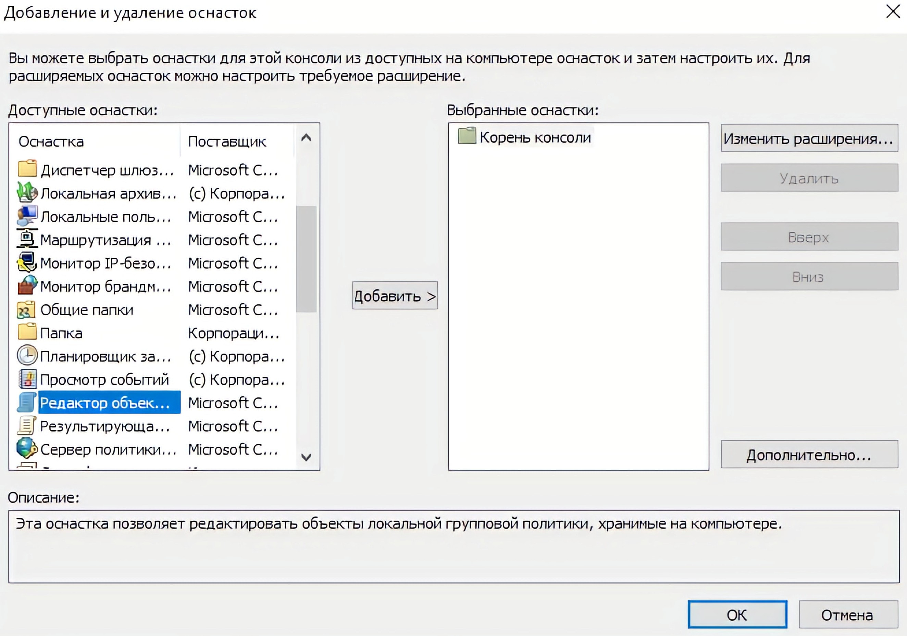
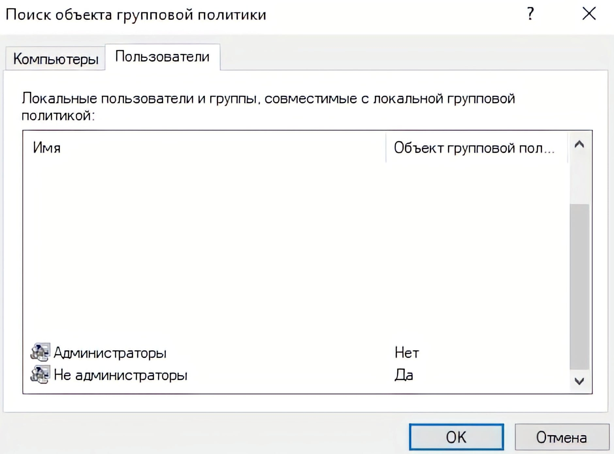

Администрирование Windows Server 2019. Групповые политики
Изучите материал о Windows Server 2019. Чтобы перейти к учебному материалу, кликните на каждую из иконок.
Изучите материал о Windows Server 2019. Чтобы перейти к учебному материалу, кликните на каждую из иконок.
Классификация компьютерной графики
Локальная групповая политика позволяет контролировать параметры текущего устройства – определять поведение операционной системы для всех пользователей и вносить отдельные настройки для каждой из учётных записей. Для настройки групповых политик сервера без домена имеем подготовленный сервер с операционной системой Windows Server 2019. В меню пуск, выбираем элемент «выполнить» и вводим gpedit.msc, либо через командную строку. Открывается «Редактор локальной групповой политики»:

Конфигурация компьютера позволяет применять политики на весь сервер, а конфигурация пользователя позволяет применить политики на того пользователя, который запустил редактор. Применим ограничения по времени для активных, но бездействующих и отключенных сеансов. Для этого переходим «Конфигурация компьютера» «Административные шаблоны»->«Компоненты Windows» -> «Службы удаленных рабочих столов» -> «Ограничение сеансов по времени», здесь находим две политики «Задать ограничение по времени для отключенных сеансов» и «Задать ограничение по времени для активных, но бездействующих сеансов служб удаленных рабочих столов». Включаем политику и указываем время, например, 3 часа:

Если требуется запустить редактор на группу пользователей (администраторы или «не администраторы»), необходимо запустить mmc, так же через «выполнить», либо командную строку. Добавляем необходимую оснастку: Нажимаем «файл», далее «Добавить или удалить оснастку». Далее выбираем «Редактор объектов групповой политики»:
Нажимаем добавить, затем кнопку «обзор». На данном этапе выбираем вкладку «пользователи» и к какой группе (или к конкретному пользователю) мы хотим применить политику:
Далее нажимаем «ок» и запускаем выбранную оснастку.

Сделаем блокировку рабочего стола при неактивности пользователя. Для этого переходим в «Конфигурация пользователя» -> «Административные шаблоны» -> «Панель управления» -> «Персонализация». Выбираем политики «Защита заставки с помощью пароля» и «Тайм-аут экранной заставки». Включаем защиту заставки, тайм-аут включаем и выставляем время в секундах, например, 600с (10 минут):

Таким образом можно настроить любые другие политики или действия